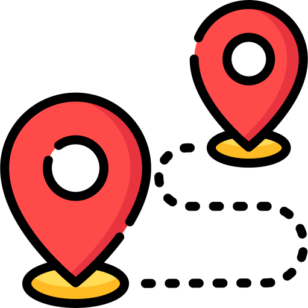

| 2020 – 2022 | Formation en alternance à l'école 404 , au titre de Développeur et Concepteur d'Applications (voir la fiche formation). |
| 2019 – 2020 | Formation autodidacte au développement web. |
| 2015 – 2018 | Prof d'allemand. Contractuel en collège et lycée à Cherbourg puis en Ille-Et- Vilaine (Saint-Malo, Guichen, Vitré) |
| 2011 – 2015 | Psychologie. Licence à l'UFR de Caen, master 1 en psychologie clinique, stages en psychiatrie. |
| 2005 – 2011 | Chaudronnier. BTS, Deux ans d'expérience en France et Allemagne, nombreux voyages. Appris l'allemand en autodidacte. |

Emmanuel Bosquet
Alternant Concepteur Développeur d'Applications
Passionné de technologie, inscrit à l'école 404, j'aspire à mettre mes compétences au service de votre entreprise.

Un parcours riche
Réalisations
Tous les programmes que j'ai écrits sont consultables sur mon github. J'ai réalisé entre autres :
des applications interactives
- Une application qui calcule l'âge cumulé d'un groupe de personnes. Essayez-la ! (Javascript - React)
- Des jeux en lignes de commande, tetris et snake (en utilisant le language informatique Rust)
- Ce CV en ligne (HTML/CSS/javascript) au design responsif, hébergé par github pages.
- Un wiki pour prendre note de mes cours de psycho (pmwiki - PHP)
des applications entre machines
- Une API REST ( voir le code ), c'est-à-dire une application back-end, accessible par des sites web. Cette application reçoit, conserve et renvoie la donnée de façon sécurisée pour que seuls les sites et les utilisateurs autorisés puissent y accéder / la modifier. (codé en rust avec gestion du JWT)
- Participé au projet de l'application d'offres d'emploi (job board) du Caen Camp, le collectif des codeurs caennais passionnés. Mes contributions à ce travail d'équipe ont consisté à optimiser le format des requêtes du front-end (le site web) pour le back-end (l'API REST). Voir un exemple de contribution. J'ai également mis à jour les tests unitaires et d'intégration pour assurer l'intégration continue. (codé en NodeJS)
- Un client MQTT léger (Rust)
des applications de loisirs
- Un serveur de jeu Minecraft, hébergé sur ma propre machine, accessible par mes amis pour jouer en ligne et en multijoueur.
- Un serveur de partage de fichiers hébergé sur ma propre machine et accessible à mes amis par navigateur. (Protocole FTP)
- Une fiction que j'ai écrite et présentée sous format web (outil mdbook).
Compétences techno
| Langages informatiques: | javascript, rust, bash, PHP |
| Paradigme de programmation: | Procédural, Orienté Objet |
| Back-end: | NodeJS, Symfony |
| Front-end : | HTML/CSS, React, Meteor, notions de redux |
| Base de données : | SQL (MySQL, MariaDB, PostgresQL) |
| linux : | Debian, Arch Linux. Installation et maintenance, scripts shell, regex. |
| admin : | Mise en place et maintenance de serveurs HTTP (Apache, NginX), FTP, minecraft. |
| Devops : | git, ssh, docker, docker-compose, ansible |

Compétences humaines
| Associatif : | Président d'Espéranto-jeunes de 2011 à 2012. Organisation de rencontres internationales. |
| Pédagogie et relationnel: | Aisance face à un groupe, capacité à faire passer un message précis. |
| Chaîne youtube: | « Emmanuel explique Bitcoin » |
| Langues: | Anglais, allemand et espéranto, excellente maîtrise à l'oral et à l'écrit. |
Loisirs
| Écriture : | Autopublié un récit autobiographique. |
| Musique : | Animation de chants de groupe à la guitare. |
| Sport : | Natation. |